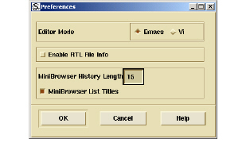
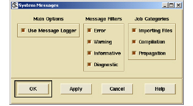

File
The File menu allows you to control the main Browser environment, including memory and performance, preferences, messaging, and window management. Its commands include:
• Save All Files saves all open files that you have edited.
• Load/Unload allow you to load and unload .psets (ASTs) from memory, helping you to manage performance and memory usage.
• Preferences allows you to choose your desired editor and establish your Minibrowser history settings. Information on selecting your editor was presented in Choosing an IDE. The Minibrowser history setting allows you to control how many Minibrowser actions are stored and whether or not you display list names.

• Messages allows you to set when and which messages you want to display while working in the Browser.

Related Topics